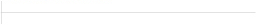

Udalosti
20.01.2016
Inspirativní ráno #35 s Petrem Švacarou
Petr Švancara začínal v Zetoru Brno, v deseti přišel do Boby Brno, ve dvaceti hrál za Uherské Hradiště, poté za Staré Město.
V roce 1997 se vrátil do prvoligového Brna a v září 2000 přestoupil do Slavie. V pražském klubu nikdy nehrál pravidelně v základní sestavě, po dvou letech byl uvolněn na hostování do druholigové Opavy. V létě 2003 se vrátil do Brna. Po třech letech mu nebyla prodloužena smlouvu, v létě 2006 tak zamířil do Interu Bratislava...
9.12.2015
Inspirativní ráno #34 s Adamem Ondrou
Adrenalin pod střechou, na skalách, lezení s lanem i bez lana. Je jen pár lidí, kteří o lezení a horolezectví obecně i prakticky ví v České republice více než Adam Ondra, který se tomuto sportu věnuje již od čtyř let. Ve své profesi se stal velmi rychle špičkou, a to je mu pouze 22let.
25.11.2015
Inspirativní ráno #33 s Czechitas
Jak si představíte typického ajťáka? Asi ne jako krásnou blondýnku, ale my Vám toto ráno dokážeme opak.
Že IT je jen pro muže už je dávno překonané klišé, ale kdo tomu vlastně pomohl? A jak se ženy mohou zapojit do typicky mužského odvětví, kterému dlouhodobě vládly především zákony "ajťáků jakožto chlapů co mají svůj svět?" Máme pro Vás jeden tip, jsou to dámy z iniciativy Czechitas, které boří mýty a stereotypy v oblasti, ve které se opravdu nevyzná každý.
21.10.2015
Inspirativní ráno #32 s Lukášem Hejlíkem
Český herec a podnikatel. Krom účinkování v nejrůznějších českých televizních seriálech je především autorem úspěšného projektu divadelních čtení LiStoVáNí, se kterým vystupuje po celé České republice. Za rok objede na 200 českých měst a odehraje přes 400 představení. Kromě herectví spolupracuje s prestižní pánskou značkou Le Premier, kde funguje jako tvář a návrhář zároveň. Stále chová ovce na své chalupě na Vysočině, ale i tento svůj koníček přeměnil na částečné podnikání. Je také známý jako gastronaut, píše pro časopisy Gurmet a Newsweek. Jeho blog Gastromapa Lukáše Hejlíka, který vede se svou ženou Veronikou, začíná nabírat na velké popularitě, protože mapuje restaurace a kavárny po celé České republice a radí vám, že je někdy lepší si někam zajet, než se spálit. Především díky LiStOVáNí je neustále v pohybu, naučil se pracovat s prioritami, časem a nacházet ty nejlepší a nejrychlejší cesty k cíli. Časopis Forbes ho označil jako nejčastěji se přesunující osobnost.
30.9.2015
Inspirativní ráno #31 s Marcelem Wesley Babinskim
Marcelo se stejně jako mnoho jiných významných odborníků ve svém oboru dostal ke kávě spíše náhodou, barista, jehož původním vystudovaným oborem byla fotografie, svůj první kurz absolvoval v roce 2004 v Caffé Ritazza a zde i nějakou dobu pobyl. Jeho další kroky vedly do kavárny Jardins či kavárny Oscara Freire. Prošel kurzy nejlepší brazilských šampionů v přípravě kávy a stal se asistentem trojnásobné šampionky mezi brazilskými baristy Brazilské asociace výběrových káv (BSCA); Silvie Magalhães. V červenci 2013 pracoval jako barista v ITALIANCOFFEE i jako ředitel v Centro de exelência em espresso a pečoval zde o pražení kávy BR Mania. Od roku 2015 poskytuje konzultace, vede kurzy a tréninky se svojí firmou Babinskikafé.
23.9.2015
Inspirativní ráno #30 s Marijou Wazi
Zakladatelka Ukrajinské iniciativy jižní Moravy, která se velmi aktivně zapojuje do pomoci obětem ukrajinsko-ruského konfliktu. Jedním z hlavních úkolů této neziskové iniciativy je adaptace dětí postižených válečnými událostmi. Marija se s námi ráda podělí o své zkušenosti, zážitky i opravdová fakta z válečných pásem, kde aktivně pobývala. Mezi hlavní témata středečního rána bude patřit otázka reálnosti faktů, která jsou médii prezentována, v kontrastu s opravdovými poznatky z válečné oblasti. Dozvíme se také něco o adaptačních táborech pro děti, které Marija Wazi provozuje a celkovém pozadí a historii konfliktu. Probereme i budoucnost a vyhlídky, které nestabilní Ukrajina má a chování EU i ostatních světových lídrů.
18.11.2014
Seznam předchozích rán
Zde se můžete podívat na seznam minulých rán, uskutečněných pod záštitou Nadace Vodafone.